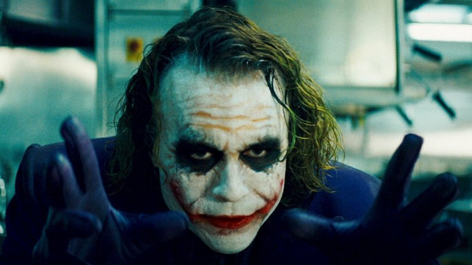
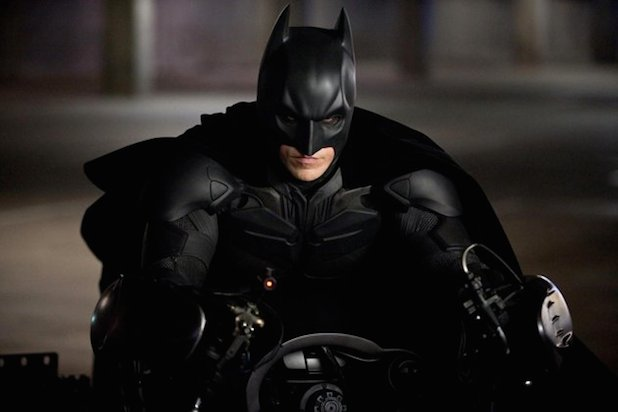

Main Title
Heroes and Villians

Joker
The Joker is a supervillain created by Bill Finger, Bob Kane, and Jerry Robinson who first appeared in the debut issue of the comic book Batman (April 25, 1940), published by DC Comics.

Batman
Batman is a superhero appearing in American comic books published by DC Comics. The character was created by artist Bob Kane and writer Bill Finger, and first appeared in Detective Comics #27 in 1939.
 Prev
PrevNext